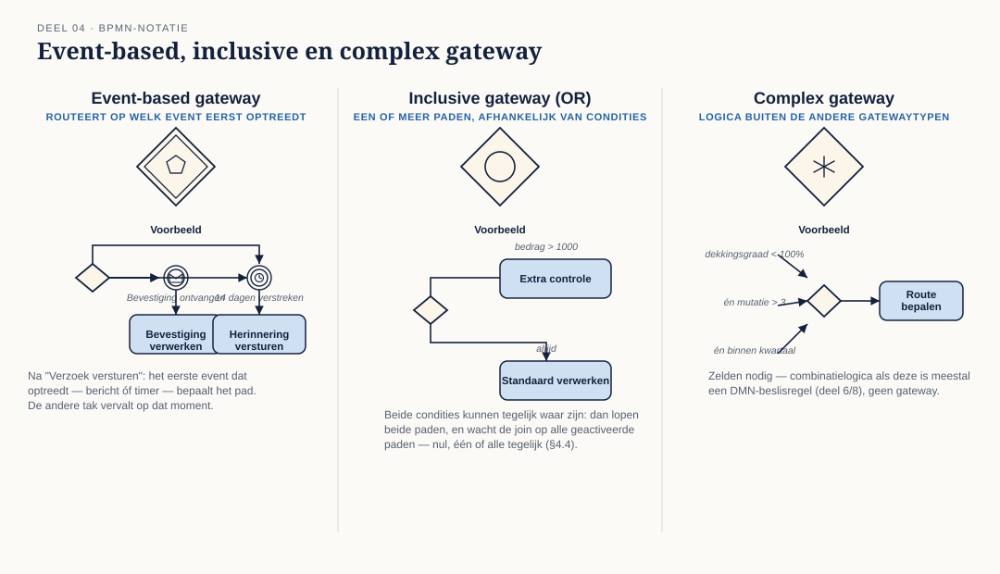
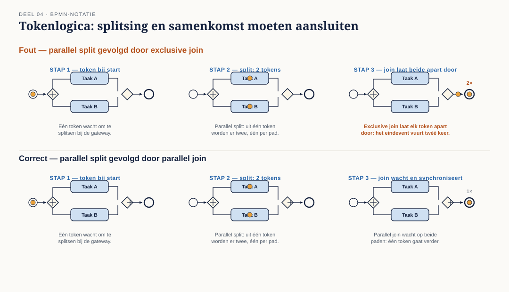
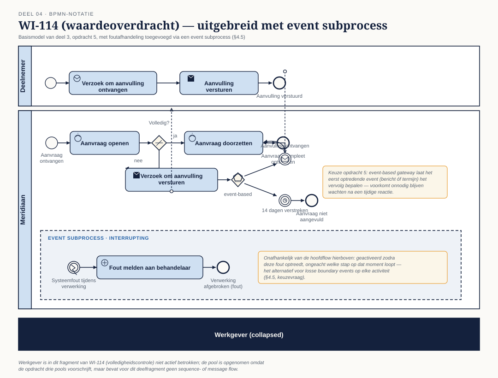

Cursus BPMN, CMMN & DMN · Niveau 1 (Fundament) · Deel 4 van 30
BPMN basis II: de analytic subclass
Deel 3 behandelde de elementen die je in vrijwel elk businessmodel tegenkomt — dedescriptive subclass. Veel processen hebben meer nodig: foutafhandeling die niet met een simpele exclusive gateway te vangen is, herhalende stappen, momenten waarop ietsondanksde normale voortgang moet gebeuren. Daarvoor bestaat deanalytic subclass: dezelfde standaard, een rijkere set elementen.
13secties
±5ustudielast
7werkboekopdrachten
6figuren
Positionering. Dit materiaal bereidt voor op het examen OCEB 2 Fundamental van de Object Management Group. Het is geen vervanging van het officiële examenmateriaal en de specificaties van OMG.
Niveau 1: ① Procesdenken en drie standaarden → ② BPM als managementdiscipline → ③ BPMN basis I: de descriptive subclass → ④ BPMN basis II: de analytic subclass (hier) → ⑤ Modelleerdiscipline en stijl → ⑥ DMN basis → ⑦ CMMN basis → ⑧ De drie talen samen → ⑨ Tooling, uitwisseling en beheer → ⑩ Examentraining en capstone
01
Leerdoelen
Sectie 1 van 13
Na dit deel kun je:
Alle eventtypen van de analytic subclass benoemen en correct toepassen: message, timer, error, escalation, signal, conditional, compensation, terminate, link.
Het verschil tussen interrupting en non-interrupting boundary events uitleggen en toepassen.
Event-based, inclusive en complex gateway onderscheiden van elkaar en van de gateways uit deel 3.
De subprocesvarianten (embedded, event subprocess, transaction, ad-hoc) onderscheiden en correct kiezen.
Loops en multi-instance modelleren, sequentieel en parallel.
De tokenlogica van een model uitleggen: wat er precies gebeurt bij een splitsing en een samenkomst.
02
Waarom een tweede subclass
Sectie 2 van 13
Deel 3 behandelde de elementen die je in vrijwel elk businessmodel tegenkomt — de descriptive subclass. Veel processen hebben meer nodig: foutafhandeling die niet met een simpele exclusive gateway te vangen is, herhalende stappen, momenten waarop iets ondanks de normale voortgang moet gebeuren. Daarvoor bestaat de analytic subclass: dezelfde standaard, een rijkere set elementen.
Twee waarschuwingen vooraf. Ten eerste: meer elementen betekent meer manieren om een model onleesbaar te maken. De discipline uit deel 5 (modelleerstijl) is voor dit deel belangrijker dan voor deel 3, juist omdat de verleiding om alles te tonen hier groter is. Ten tweede: niet elk uitzonderingsscenario hoort in BPMN. Sommige "uitzonderingen" zijn eigenlijk dossierwerk (deel 1, §1.1) en horen in CMMN. Dit deel leert je de BPMN-gereedschappen; de keuze wanneer je ze gebruikt en wanneer niet, komt scherp terug in deel 8.
03
Eventtypen volledig
Sectie 3 van 13
Naast none, message en timer (deel 3) kent de analytic subclass zes eventtypen extra:
Error event — een fout die het normale verloop onderbreekt. Een error event heeft altijd een oorzaak die ergens anders in het model (of in een aangeroepen subproces) is ontstaan.
Escalation event — een signaal dat iets binnen het proces de aandacht van een hoger niveau nodig heeft, zonder dat het per se een fout is. Een aanvraag die de normale termijn overschrijdt en daardoor geëscaleerd moet worden naar een teamleider.
Signal event — een breed uitgezonden bericht, niet gericht aan één specifieke ontvanger. Het verschil met message: een message heeft een geadresseerde ontvanger, een signal kan door elk proces dat ernaar luistert worden opgepikt.
Conditional event — treedt op zodra een voorwaarde waar wordt, niet op basis van een bericht of tijdstip maar op basis van een toestand (bijvoorbeeld: zodra de dekkingsgraad boven 100% komt).
Compensation event — activeert compensatielogica: het ongedaan maken van een eerder voltooide activiteit wanneer het proces alsnog afgebroken moet worden.
Terminate event — beëindigt het gehele proces onmiddellijk, inclusief alle nog lopende parallelle paden. Een zwaar middel; gebruik het spaarzaam en alleen waar een proces écht in zijn geheel moet stoppen.
Link event — een technisch koppelpunt (throwing en catching) om een diagram over te laten lopen naar een ander deel van dezelfde plaat, zonder een echte sequence flow te tekenen. Puur een leesbaarheidsmiddel voor grote diagrammen.
04
Boundary events: interrupting en non-interrupting
Sectie 4 van 13
Een boundary event hangt aan de rand van een activiteit of subprocess en vangt iets op terwijl die activiteit loopt. Het cruciale onderscheid:
Interrupting (doorgetrokken lijn) — de lopende activiteit wordt afgebroken zodra het boundary event optreedt. Het proces vervolgt via het pad vanaf het boundary event.
Non-interrupting (gestippelde lijn) — de lopende activiteit gaat gewoon door; het boundary event start een parallel pad ernaast.
Een timer boundary event op een goedkeuringsactiviteit die na vijf dagen escaleert naar een teamleider, terwijl de oorspronkelijke goedkeuring gewoon door kan gaan, is non-interrupting: je wilt de escalatie niet in plaats van de goedkeuring, maar ernaast. Een error boundary event op een systeemaanroep die bij een fout de hele activiteit afbreekt en naar een foutafhandelingspad stuurt, is interrupting: de oorspronkelijke activiteit heeft geen zin meer om door te laten lopen.
Dit onderscheid wordt vaak fout gemodelleerd doordat het verschil in de tekening klein is (doorgetrokken versus gestippeld) terwijl het gedrag fundamenteel verschilt. Controleer bij elk boundary event expliciet: moet de onderliggende activiteit stoppen, of niet?
05
Event-based, inclusive en complex gateway
Sectie 5 van 13
Naast exclusive en parallel (deel 3) kent de analytic subclass drie gatewaytypes:
Event-based gateway — routeert niet op een conditie maar op welk van meerdere mogelijke events als eerste optreedt. Typisch gebruikt na een activiteit waarvan je niet weet welke reactie als eerste komt: een bevestiging óf een afwijzing óf het verstrijken van een termijn, elk als apart pad.
Inclusive gateway (OR) — een of meerdere van de uitgaande paden worden gevolgd, afhankelijk van welke condities waar zijn — nul, één of alle tegelijk. Bij de samenkomst wacht de inclusive join op alle paden die daadwerkelijk geactiveerd waren, niet op alle mogelijke paden.
Complex gateway — voor routeringslogica die met geen van de andere gatewaytypes uit te drukken is. In de praktijk zelden nodig, en dat is precies waarom je hem zelden wilt: een complex gateway is vaak een teken dat de onderliggende logica eigenlijk een beslissing is die in DMN thuishoort (deel 6, deel 8) in plaats van in een gateway die zelf al complex genoeg is om apart te moeten uitleggen.
De inclusive gateway is de meest onderschatte bron van fouten. Omdat de join moet weten hoeveel van de mogelijke paden daadwerkelijk actief waren, is de synchronisatielogica lastiger te doorzien dan bij exclusive of parallel. Gebruik hem alleen waar de business daadwerkelijk "een of meer van" bedoelt, en niet als een makkelijke vervanger voor een combinatie van exclusive gateways.
06
Subprocessen
Sectie 6 van 13
Vier varianten, elk met een eigen doel:
Embedded subprocess — een subproces dat alleen binnen dit ene proces bestaat, niet herbruikbaar elders. Gebruikt om een deel van het model te groeperen en, indien collapsed getekend, het hoofdmodel overzichtelijk te houden.
Event subprocess — een subproces dat niet in de normale flow zit maar wordt getriggerd door een event (vaak error, escalation of timer) ergens tijdens het hoofdproces, ongeacht waar het hoofdproces op dat moment is. Het alternatief voor een groot aantal boundary events verspreid over veel activiteiten.
Transaction — een subproces met alles-of-niets-semantiek: als het faalt, wordt alles wat binnen de transactie al gebeurd is teruggedraaid via compensatie. Relevant waar meerdere stappen samen consistent moeten zijn of geen van alle.
Ad-hoc subprocess — een verzameling activiteiten zonder vaste volgorde ertussen, met een voltooiingsconditie. Dit is BPMN's eigen antwoord op ongestructureerd werk — en meteen de plek waar de grens met CMMN het scherpst gevoeld wordt (deel 8).
Keuzevraag die in elk model terugkomt: verspreid je foutafhandeling over losse boundary events op elke activiteit, of vang je ze centraal met één event subprocess? Bij twee of drie foutbronnen is verspreiden overzichtelijker; bij veel activiteiten die dezelfde foutafhandeling delen, is een event subprocess overzichtelijker en voorkomt het duplicatie.
07
Loops en multi-instance
Sectie 7 van 13
Twee manieren om herhaling te modelleren:
Standard loop — een activiteit die zichzelf herhaalt zolang (of totdat) een conditie geldt, zonder dat het aantal herhalingen vooraf bekend is.
Multi-instance — een activiteit die meerdere keren wordt uitgevoerd over een verzameling, sequentieel of parallel. Sequentieel multi-instance voert de ene instantie na de andere uit; parallel multi-instance start ze tegelijk.
Bij multi-instance is de completion condition de vraag die het meest over het hoofd wordt gezien: moeten alle instanties voltooid zijn voordat het proces verdergaat, of is een deel voldoende? Bij een goedkeuring die door drie van de vijf comitéleden bevestigd moet worden, is de completion condition niet "alle vijf" maar "drie van de vijf" — dat expliciet vastleggen is onderdeel van een correct model, niet een detail voor de bouwfase.
08
Tokenlogica
Sectie 8 van 13
BPMN's uitvoeringsmodel is te begrijpen via het beeld van een token: een denkbeeldig markeertje dat door het proces reist. Een startevent produceert een token. Een activiteit consumeert het token bij binnenkomst en produceert het weer bij voltooiing. Een exclusive gateway laat het token op precies één uitgaand pad verder reizen. Een parallel split maakt van één token er meerdere — één per uitgaand pad — en een parallel join wacht tot er op elk inkomend pad een token is aangekomen voordat er weer één token verdergaat.
Dit beeld verklaart in één keer waarom je splitsingstype en samenkomsttype op elkaar moet laten aansluiten (deel 3, §3.5): een parallel split produceert meerdere tokens; een exclusive join verwacht er maar één per keer en laat elk binnenkomend token apart doorgaan. Combineer je een parallel split met een exclusive join, dan gaat het proces niet één keer verder na synchronisatie, maar zo vaak als er tokens binnenkomen — een fout die pas bij uitvoering zichtbaar wordt en in een statische tekening onopgemerkt blijft.
Voor een inclusive gateway is de tokenlogica subtieler: de split produceert een token voor elk pad waarvan de conditie waar is, en de join moet — voordat hij een token doorlaat — weten hoeveel tokens er onderweg zijn om op te wachten. Dat is precies waarom inclusive gateways lastiger zijn dan ze op het eerste gezicht lijken.
09
Kernbegrippen
Sectie 9 van 13
Error / escalation / signal / conditional / compensation / terminate / link event — de zes aanvullende eventtypen van de analytic subclass · Boundary event — event aan de rand van een activiteit · Interrupting / non-interrupting — wel of niet de onderliggende activiteit afbreken · Event-based gateway — routeert op welk event het eerst optreedt · Inclusive gateway (OR) — een of meer paden, afhankelijk van condities · Complex gateway — routeringslogica buiten de andere typen · Embedded / event subprocess / transaction / ad-hoc subprocess — de vier subprocesvarianten · Standard loop / multi-instance (sequentieel/parallel) · Completion condition · Token — het uitvoeringsmodel van BPMN
10
Examenrelevantie — OCEB 2 Fundamental
Sectie 10 van 13
Sluit de Business Process Modeling Skills en Business Process Modeling Concepts af voor wat betreft BPMN. Het examen toetst met name het correct herkennen van interrupting versus non-interrupting boundary events en het effect van elk gatewaytype op de tokenstroom in een gegeven diagram.
Figuur 4.1 — De zes aanvullende eventtypen naast elkaar met hun symbolen, aanvullend op figuur 3.4.Figuur 4.2 — Interrupting versus non-interrupting boundary event op dezelfde activiteit, met het verschil in vervolgpad getekend.

Figuur 4.3 — Event-based, inclusive en complex gateway naast elkaar, elk met een kort voorbeeld.Figuur 4.4 — De vier subprocesvarianten als vergelijkend overzicht.

Figuur 4.5 — Tokenlogica: een geanimeerde of stapsgewijze reeks die toont wat er gebeurt bij een parallel split gevolgd door een exclusive join (de fout) versus een correcte parallel join.

Figuur 4.6 — Het model van WI-114 uit deel 3, opdracht 5, uitgebreid met foutafhandeling via een event subprocess.
13
Werkboek — opdrachten
Sectie 13 van 13
Werk de opdrachten in volgorde. Opdracht 1 en 2 individueel, opdracht 3 (modelleren) individueel in Conductus, opdracht 4 en 5 in tweetallen, opdracht 6 plenair. Reken op ± 3 uur.
Werkboekopdrachten
Uit Werkboek deel 4, letterlijk overgenomen — geen modelantwoorden ingevuld, dit is klassikaal/individueel werk
Opdracht 1 — Herken de eventtypen
Bij elke situatiebeschrijving: welk eventtype uit §4.2 past het best, en is het een start, intermediate of end event?
Een systeemaanroep naar SAP geeft een technische storing terug.
Een aanvraag die twee dagen langer dan de norm openstaat, moet onder de aandacht komen van de teamleider — zonder dat de lopende behandeling stopt.
Een bericht dat naar alle processen tegelijk gaat die op dit moment een polis van dezelfde werkgever behandelen.
Zodra de dekkingsgraad van het fonds weer boven 100% komt, mogen aangehouden aanvragen verder.
Een aanvraag wordt om een juridische reden volledig ingetrokken; alle reeds voltooide stappen (waaronder een verstuurde brief) moeten worden teruggedraaid.
Bij een ernstige fraudesignalering moet het gehele lopende proces onmiddellijk stoppen, inclusief alle parallelle paden.
Een diagram is te groot voor één plaat; het linkerdeel moet doorlopen naar het rechterdeel zonder een lange lijn te tekenen.
Opdracht 2 — Interrupting of non-interrupting?
Beoordeel per situatie of het boundary event interrupting of non-interrupting moet zijn, en beargumenteer.
Een timer van 5 dagen op een goedkeuringsactiviteit die na het verstrijken een herinnering stuurt, terwijl de goedkeuring intussen gewoon door kan gaan.
Een error event op een service task die een SAP-aanroep doet; bij een fout heeft de activiteit geen zinvol resultaat meer.
Een escalation event op een wachtactiviteit die na 10 dagen automatisch doorschakelt naar een teamleider, die de zaak vanaf dat moment overneemt.
Een timer van 30 minuten op een user task die, als de medewerker niet reageert, de taak automatisch terugzet in de wachtrij voor een andere medewerker.
Een conditional event op een wachtstatus dat, zodra de voorwaarde waar wordt, een parallel informatief bericht stuurt terwijl de wachtstatus blijft bestaan tot een andere trigger.
Opdracht 3 — Modelleren: foutafhandeling
Neem je model van deel 3, opdracht 5 (het WI-114-fragment met de aanvultermijn) mee in Conductus en breid het uit:
Vervang je oplossing voor het verstrijken van de termijn (indien je een exclusive gateway gebruikte) door een boundary timer event op de wachtactiviteit. Bepaal zelf: interrupting of non-interrupting, en beargumenteer in een tekstannotatie.
Voeg een event subprocess toe op procesniveau dat een technische fout (error event) opvangt, ongeacht in welke activiteit die optreedt, en het proces naar een generiek foutafhandelingspad leidt.
Voeg een inclusive gateway toe op de plek waar zowel de medewerker als het systeem (onafhankelijk van elkaar) een notificatie kunnen versturen — nul, één of beide, afhankelijk van instellingen.
Documenteer bij elk toegevoegd element in een tekstannotatie waarom je voor dit specifieke type gekozen hebt en niet voor een alternatief uit deel 3.
Opdracht 4 — Volg het token(tweetallen)
Gegeven twee modelfragmenten (aangeleverd als afbeelding):
Fragment A — een parallel split gevolgd door een exclusive join.
Fragment B — een inclusive split waarbij twee van de drie condities waar kunnen zijn, gevolgd door een inclusive join.
Beschrijf voor elk fragment, stap voor stap, wat er met het token (of de tokens) gebeurt bij uitvoering. Voor fragment A: wat gaat hier fout, en hoe vaak "vuurt" de activiteit na de join in de praktijk? Voor fragment B: waar moet de join op wachten, en hoe weet hij dat?
Opdracht 5 — Kies de subprocesvariant(tweetallen)
Voor elk van de volgende situaties: welke van de vier subprocesvarianten (embedded, event subprocess, transaction, ad-hoc) past het best, en waarom niet een van de andere drie?
Een reeks van vier stappen die alleen samen betekenis hebben — als één ervan faalt, moeten de andere drie worden teruggedraaid.
Een groep van vijf onderzoeksactiviteiten bij een klacht die de behandelaar in willekeurige volgorde kan uitvoeren, met als voltooiingsconditie dat er een besluit ligt.
Een blok van drie stappen dat puur dient om het hoofdmodel overzichtelijk te houden — er is verder niets bijzonders aan.
Foutafhandeling die voor vijftien verschillende activiteiten in het proces hetzelfde moet verlopen.
Opdracht 6 — Stellingen(plenair)
Een complex gateway is bijna altijd een teken dat er eigenlijk een DMN-beslissing ontbreekt.
Een terminate event hoort zelden in een businessmodel thuis — het is een technisch vangnet, geen ontwerpkeuze.
Ad-hoc subprocessen zijn een teken dat je eigenlijk naar CMMN had moeten overstappen.
Hoe meer eventtypen een model gebruikt, hoe onprofessioneler het meestal oogt voor een niet-technisch publiek.
Vooruitblik
Deel 5 gaat over modelleerdiscipline en stijl: de regels die een technisch correct model ook een goed leesbaar model maken. Neem je uitgebreide model van opdracht 3 mee — dat wordt in deel 5 tegen een stijlchecklist gelegd.
Verder naar deel 5
Deel 5 — Modelleerdiscipline en stijl — bouwt voort op wat hier is behandeld.